Version 1.5.0 — Photo → 3D realistic banana with curl animation. A Blender 4.2+ extension by kaiser390.
Skin dropdown (Photo Strip / Full Photo / Aurora)
now switches the active banana's surface instantly; no rebuild.
See §6.x.koo_fruit_engine-1.5.0.zip.N), look for the Koo Fruit tab on the right edge.
A walkthrough from a fresh Blender startup to a complete banana in under a minute.
Step 1. Fresh Blender — default cube, empty world. Press N to open the
N-panel and click the Koo Fruit tab on the right edge.
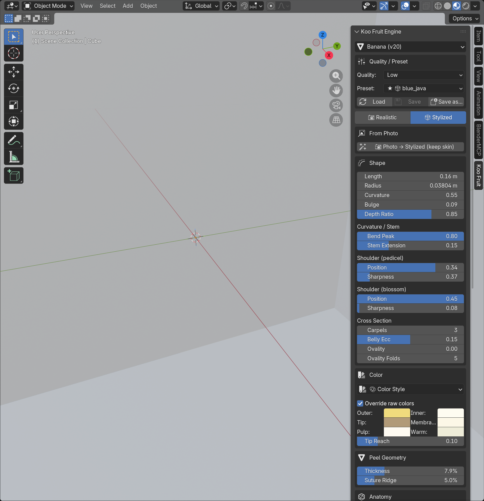
Step 2. Click ✨ Generate Stylized in the Generate box. ~3 seconds later, 11 banana objects appear (peel, pulp, membrane, bundles, seeds, …).
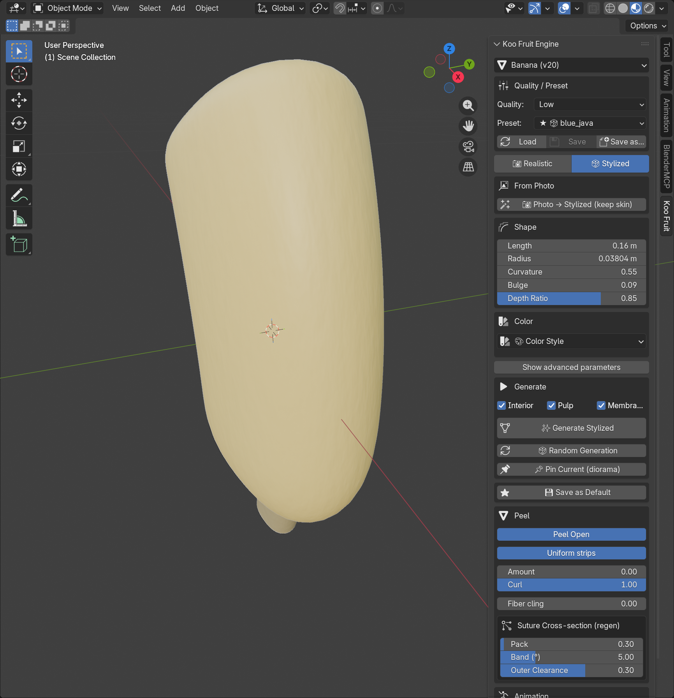
Step 3. Press Z → Material Preview to see the procedural shader
(yellow peel + cream pulp). The banana has been waiting all along —
solid shading just hides the colour.
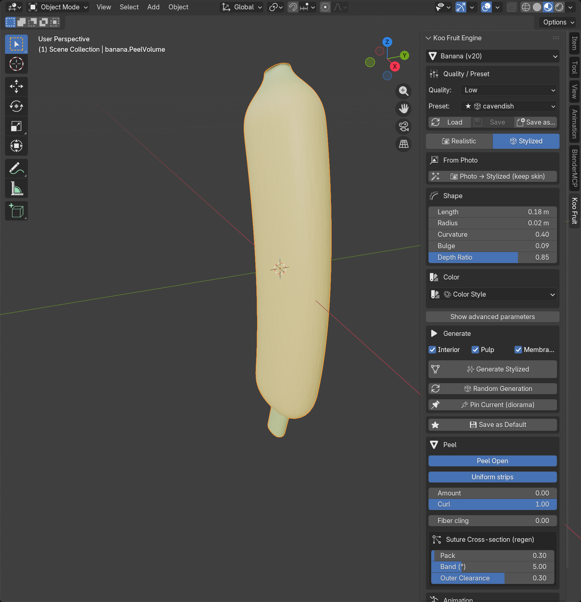
Step 4. Numpad . (Frame Selected) to centre the banana.
You're done. Slide any Shape value and re-Generate, or move on to
peeling, animation, or the photo workflow.
The entire addon lives in one N-panel section (N → Koo Fruit).
Top-to-bottom:
| Block | Purpose |
|---|---|
| Fruit Type | Which fruit recipe to use (Banana now; Apple / Pepper / Flower will auto-register as they're added). |
| Quality / Preset | Mesh density (LOW / HIGH) and preset dropdown with Load / Save / Save as… |
| 📷 Realistic | 🎲 Stylized | Workflow tabs — switch input mode |
| Image Source / Shape+Color | Tab-dependent: photo + markers (Realistic) OR slider stack (Stylized) |
| Generate | The build button. Plus 📌 Pin and debug helpers. |
| Deform (Realistic only) | Reshape markers: length × / radius × / curvature Δ |
| Peel | Open the peel, slide strip amounts + curl |
| Animation | Keyframe the waterfall-close peel animation |
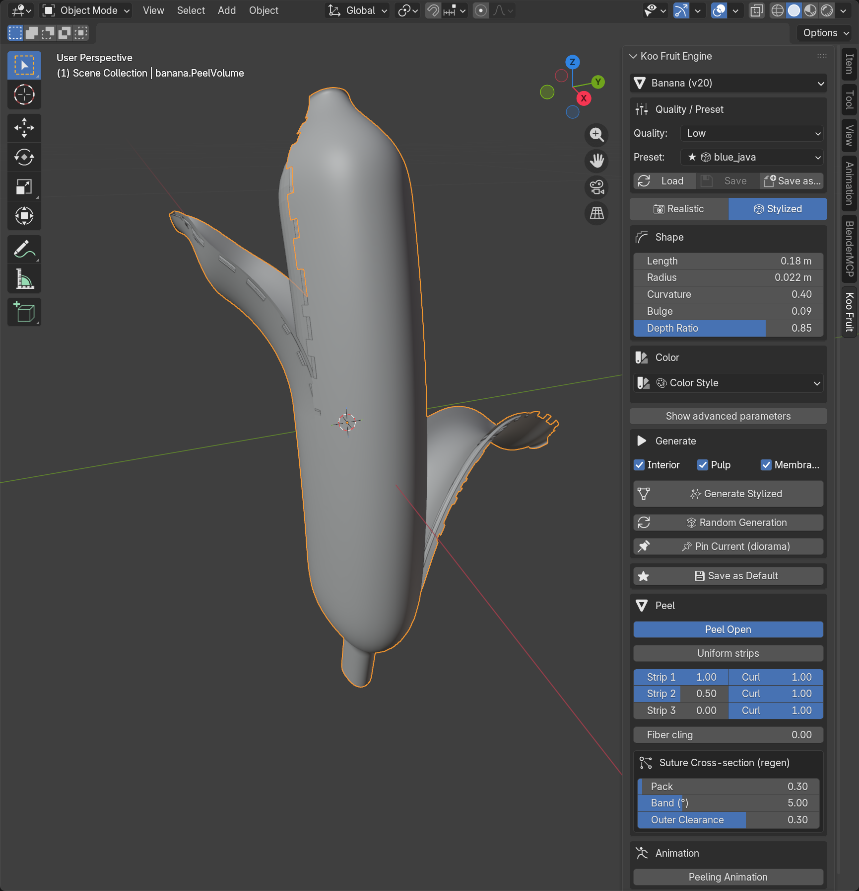
Toggle "Show advanced parameters" to expand into the full parameter set (shape advanced rows, override colours, peel geometry, anatomy, surface):
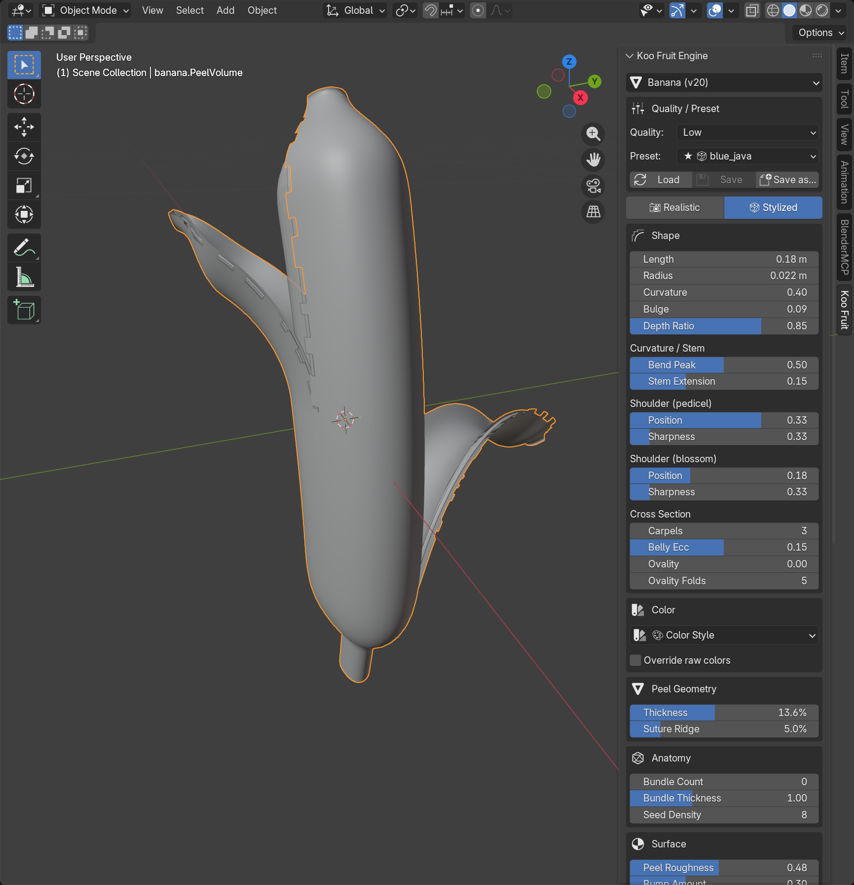
The Realistic tab (📷 selector) replaces the Shape/Color stack with Image Source + Generate + Deform:
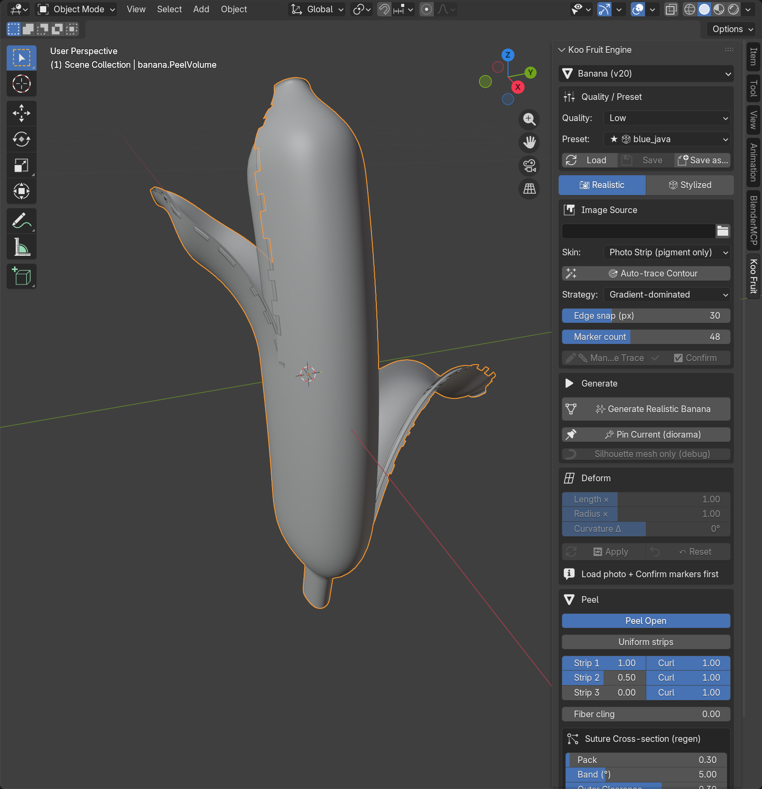
Produce a banana that matches a photograph pixel-for-pixel.
N-panel → Image Source → click the photo path field → pick your image. An Image Editor opens automatically with the photo and 48 silhouette markers + 10 control markers placed in an ellipse around it. For small or simple shapes, drop Silhouette Markers down to 12–16 before loading.

Two options — pick whichever snaps to your photo better:
| Strategy | Best for |
|---|---|
ML Smart (u2netp) |
Default. Neural-network foreground extraction. Robust on natural backgrounds (table, cloth, wood) where the fruit and background share colors. Bundled — no download needed. |
ARCHETYPE |
Clean photos with high contrast — PCA + bin extrema, filters watermarks/shadows |
ARCHETYPE_SNAP |
Archetype + gradient edge snap |
HYBRID |
Saturation mask + edge snap |
SATURATION |
Fastest, lowest accuracy. Debugging baseline |
GRADIENT_ONLY |
Matte fruit on noisy background — saturation seed + aggressive gradient pull |
Leave Edge snap at 30 px for most photos; raise when the auto-trace starts far from the true edge.

Enter to exit.
Use this to nudge markers that auto-trace placed wrong, or to trace from scratch on tricky photos.
Once the silhouette matches the banana, click ✅ Confirm.
The button turns red with * whenever markers have moved without a fresh Confirm — that's your "pending" signal.
Skin dropdown in the Image Source block:
| Mode | What you get |
|---|---|
STRIP |
1D saturation-weighted colour strip wrapped around the banana. Photo-accurate pigment, but photo shadows/highlights are discarded — Blender's own lighting re-shades the mesh. Recommended for stock photos with obvious studio lighting. |
FULL |
Planar-XZ UV maps every pixel of the photo onto the mesh. The banana looks exactly like the photo from the matching camera angle. Use for 1:1 reproduction; every pixel — including the photo's own lighting — prints onto the surface. |
AURORA |
Emission material driven by surface normals. Rainbow gradient — great for "banana lamp" or curvature visualisations. No photo needed. |
The dropdown switches the active banana's surface immediately — no rebuild. Try a few while looking at the viewport and pick what suits the scene.
N-panel → Generate box → ✨ Generate Realistic Banana.
Blender thinks for a few seconds (LOW quality: ~4 s, HIGH quality: ~12 s) and your banana appears at the origin. Numpad 1 to align with the photo view.
The full sequence in viewport (photo loaded → markers built → realistic banana with photo strip texture):
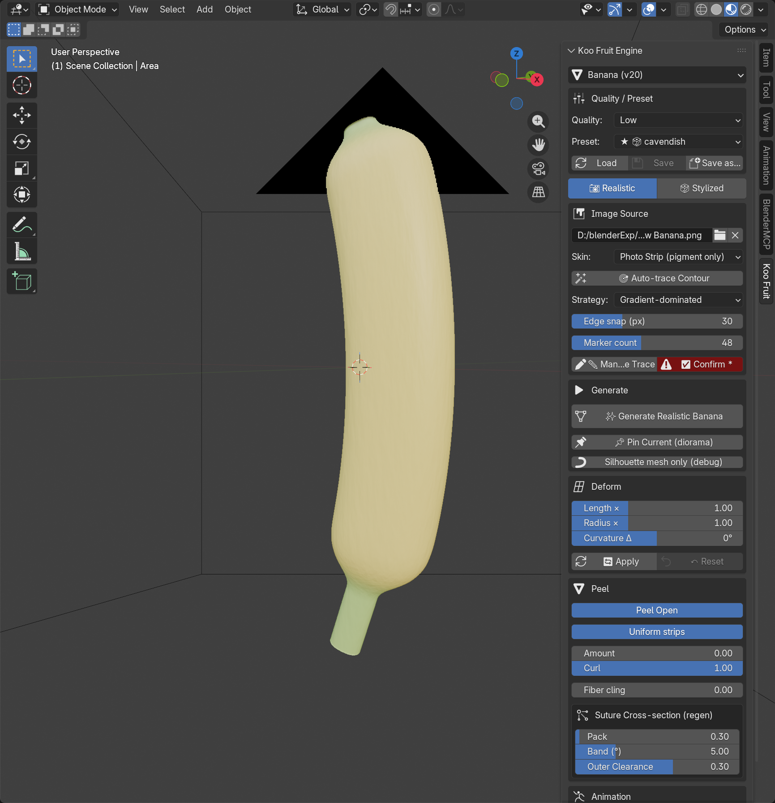
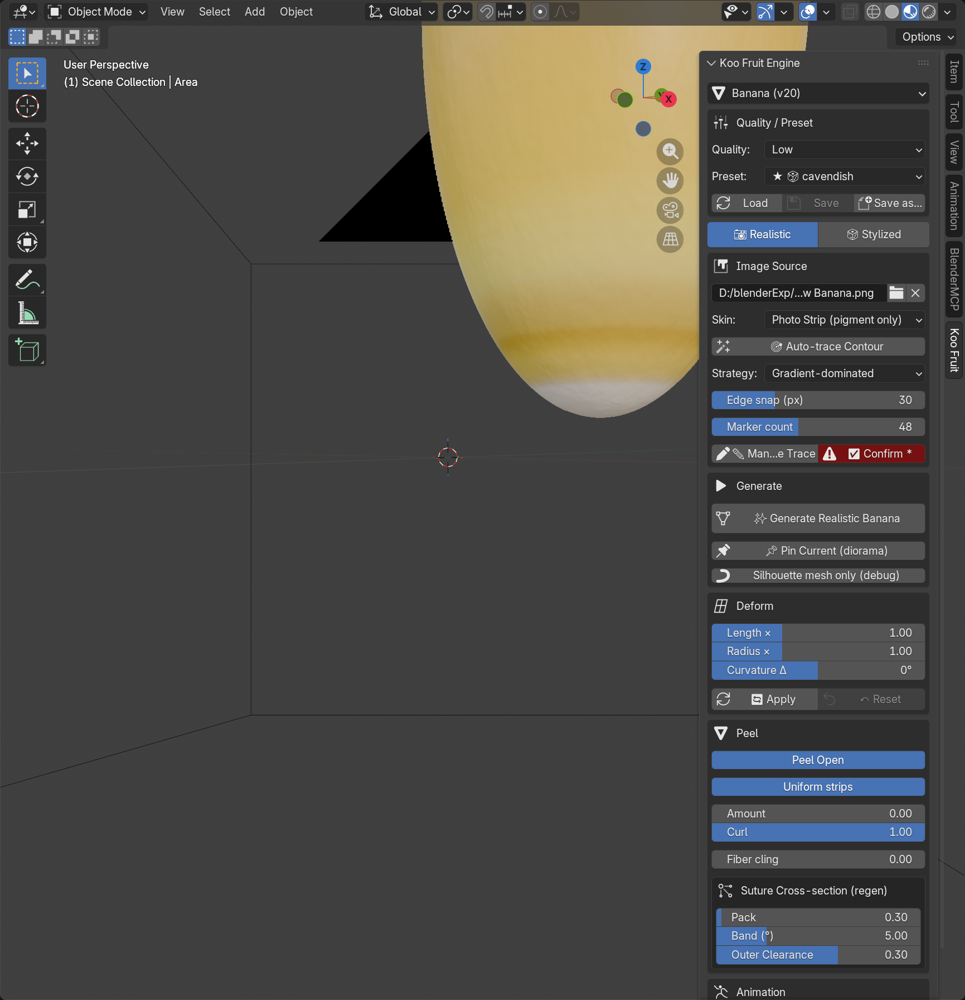

Any time you drag a marker or change the skin mode, click Generate again. The addon clears the previous banana.* objects and builds fresh.
Realistic banana captures the photo silhouette but locks shape into that exact silhouette. To edit the shape with sliders while keeping the photo strip texture, jump to the Stylized tab:
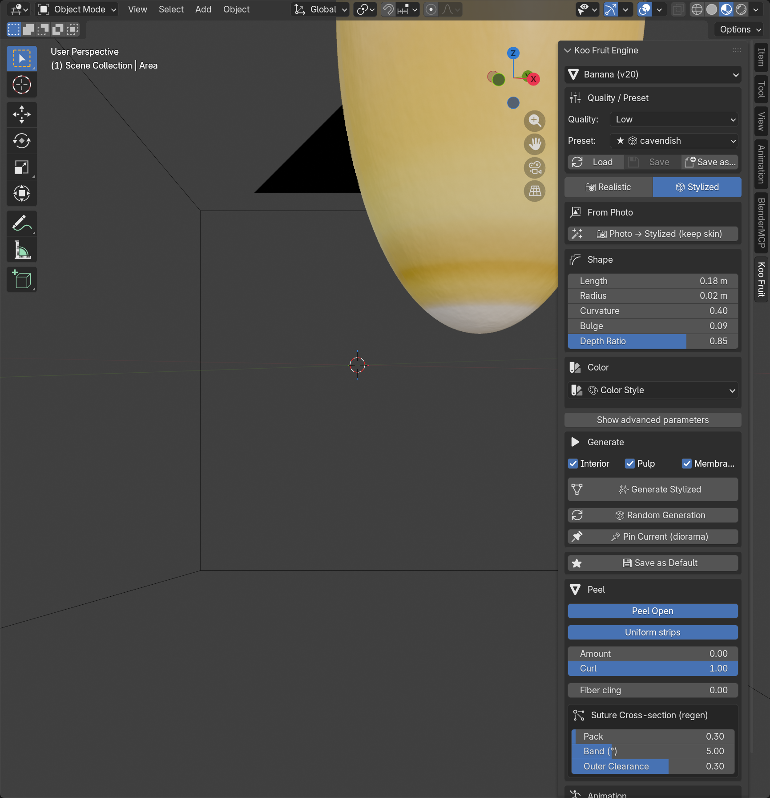
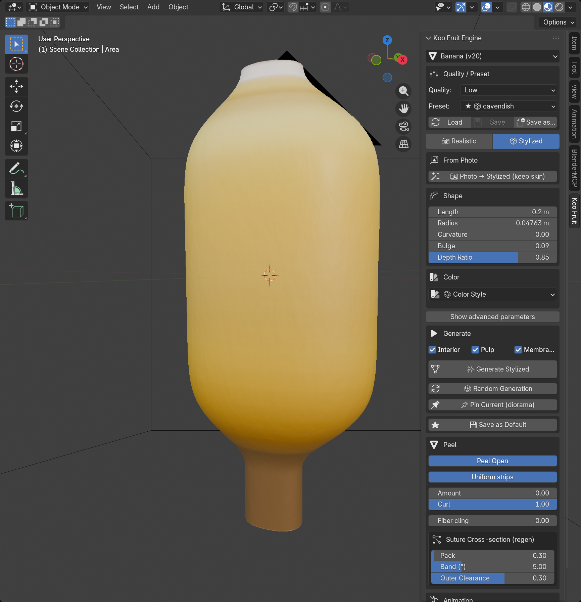
No photo, no markers — pure parametric. Use when you want a clean banana of a particular cultivar, variations via randomize, or preset-driven default bananas.
Switch to the 🎲 Stylized tab.
Quality / Preset dropdown → pick any 🎲 preset (Cavendish, Blue Java, Gros Michel, Lady Finger, Manzano, Plantain, Red Banana, Burro) → Load.

A 📷 Photo → Stylized (keep skin) button appears at the top of the Stylized tab whenever a photo + markers are loaded. It measures the silhouette, copies the geometry into the Stylized sliders, and rebuilds on the parametric pipeline while keeping the photo strip texture as the peel skin. Used for "edit my photo banana with sliders" workflows.
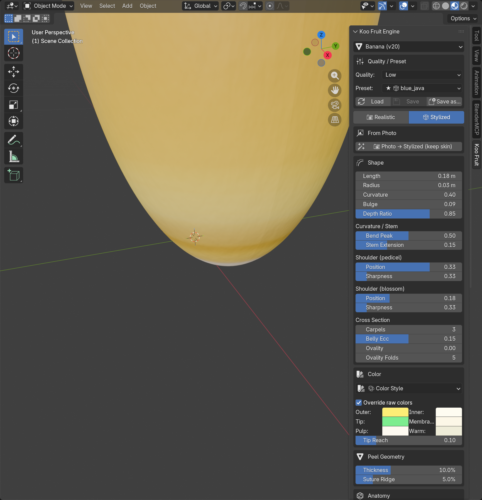
Hero: Length / Radius / Curvature / Bulge / Depth Ratio — always visible. Advanced (toggle "Show advanced parameters"): Bend Peak, Stem Extension, Shoulder (pedicel / blossom) Position + Sharpness, Carpels, Belly Eccentricity, Ovality + Folds.
(See the full Stylized advanced panel screenshot in §3 for all shape slider rows.)
Every colour control on this panel updates the active banana in milliseconds — no mesh rebuild. Pick a banana in the viewport, drag a swatch, see the result. Pinned siblings stay untouched.
Hero: 🎨 Color Style palette dropdown — Random / Olive / Berry / Wood / Space / Pastel / Metallic. Picking one swaps the active banana's palette in place (~ms). Position is preserved.
Each palette covers a different visual zone — natural palettes (Random / Olive / Berry / Wood) keep the inside cream-coloured with a mild outer-tint leak so the banana still reads as fruit; stylized palettes (Space / Pastel / Metallic) blend ~50% toward the outer so the inside visibly tracks the palette identity:
| Palette | Sample |
|---|---|
| Olive | |
| Berry | 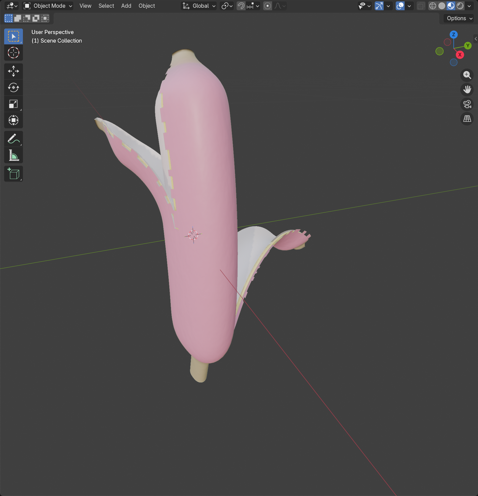 |
| Wood | 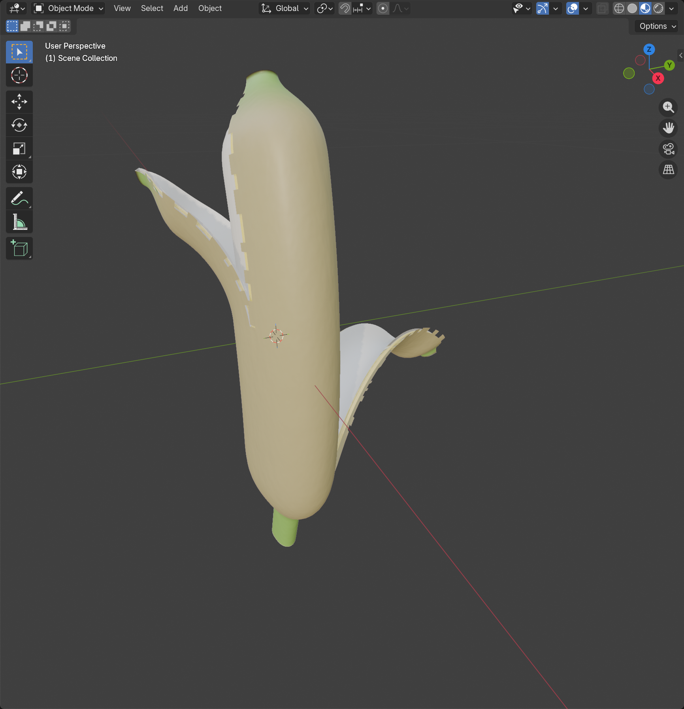 |
| Space | 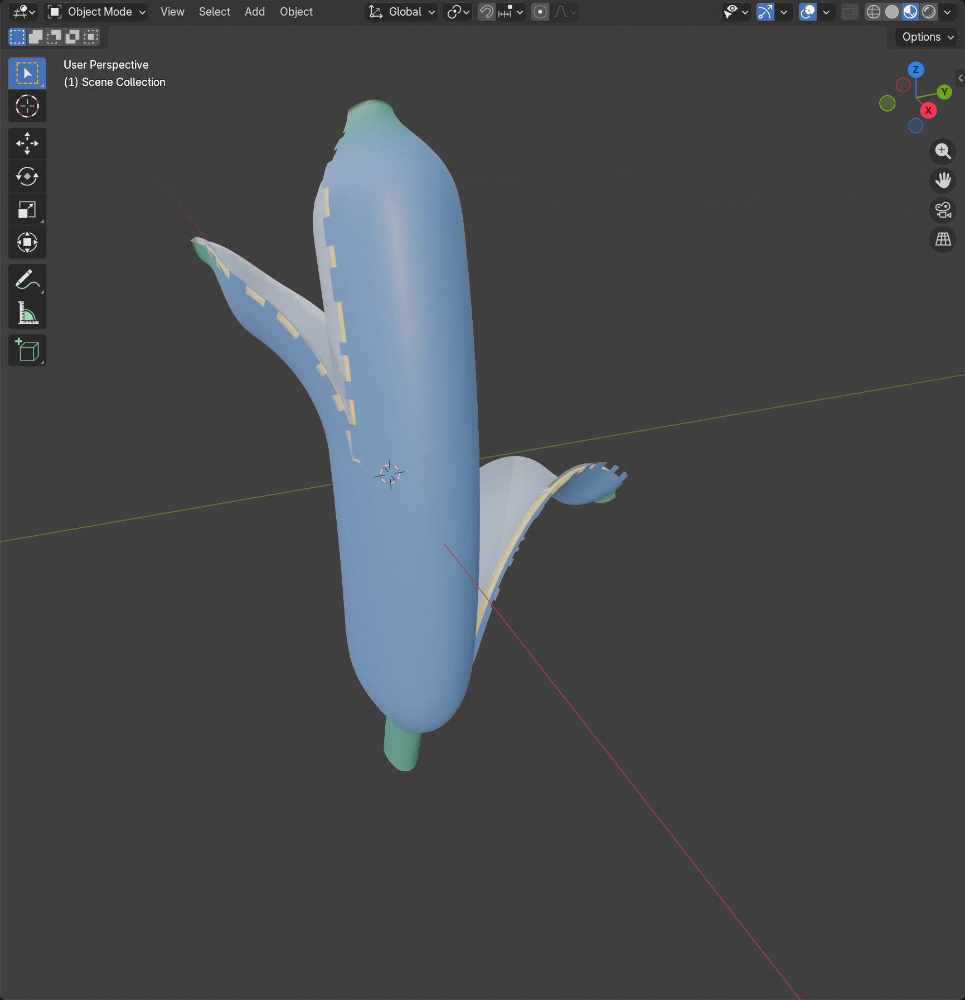 |
| Pastel | 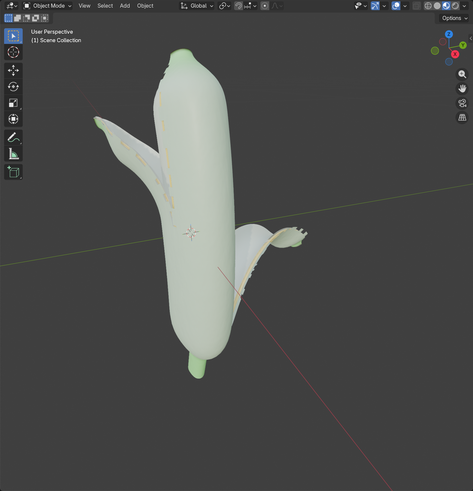 |
| Metallic | 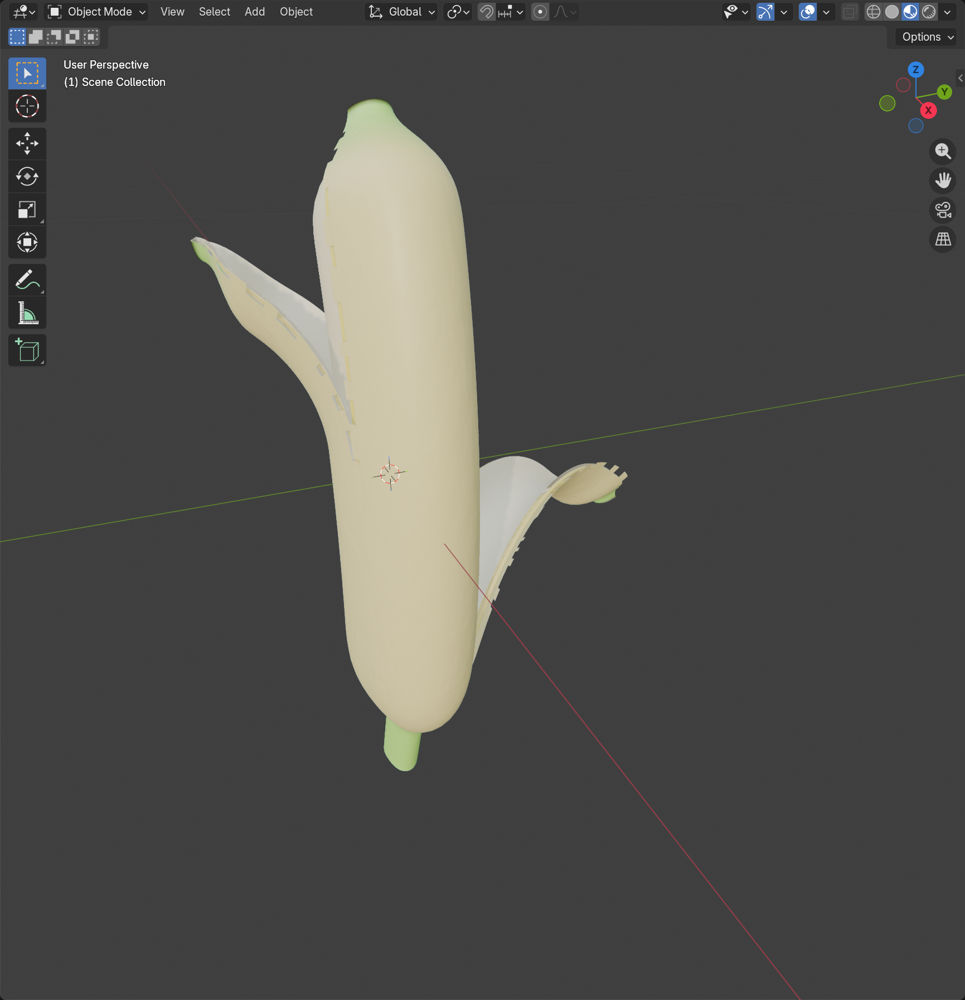 |
Advanced: Override raw colors unlocks per-layer pickers — Outer / Inner, Tip + Tip Reach, Pulp / Warm, Membrane / Spot. Use this when you want exact control over a specific cultivar's colour identity.
Thickness (%) of body radius (banana-size invariant — same value reads correctly on any cultivar). Suture Ridge (%) of peel thickness — the raised lines that follow the 3 carpels.
Bundle Count / Thickness — number and thickness of the phloem fiber tubes inside the peel. Seed Density — number of seed specks along the teardrop axes.
Peel Roughness / Bump Amount / Bump Scale / Micro Noise — material gloss + procedural surface texture.
Include checkboxes: ☐ Interior / ☐ Pulp / ☐ Membrane control which primitives are built. Unchecked → that part is not generated at all (faster Generate, smaller scene, cleaner FBX export). Toggle them off for peel-only / pulp-only variants.
✨ Generate Stylized — builds the banana from current sliders. 🎲 Random Generation — rolls every advanced slider to plausible-banana values and builds immediately. One click = one more fruit added to the scene (the previous default banana is auto-pinned aside, never overwritten). Bundle count + thickness intentionally NOT randomized (quality choices, not visual identity). Strength slider in the redo panel scales the spread.
Everything else in the JSON schema (~40 more parameters — tube radii, honey bezier controls, per-primitive roughness, SSS settings) stays file-editable. See §12 Advanced — JSON-editable parameters.
The Peel block appears after Generate. Works in both tabs.
Toggle Peel Open to enable peel interaction. Three strip sliders appear:
| Slider | What it does |
|---|---|
| Strip 1 / 2 / 3 Amount | How far each of the three peel strips is pulled back (0 = closed, 1 = fully peeled to the stem anchor) |
| Curl | Per-strip curl amount — controls how tightly the peeled strip rolls up |
| Fiber cling | 0 = fibers curl with the peel; 1 = fibers stay on the flesh |

Strip Amount sweeps from closed to fully open in one continuous slide:
| Strip Amount | Result |
|---|---|
| 0.0 (closed) | 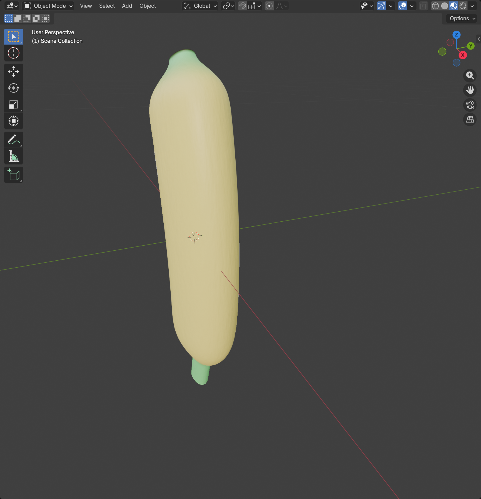 |
| 0.5 (half open) | 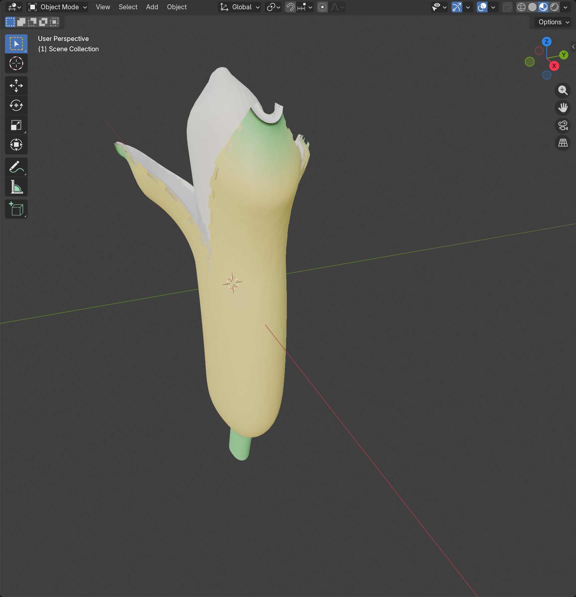 |
| 1.0 (fully open) | 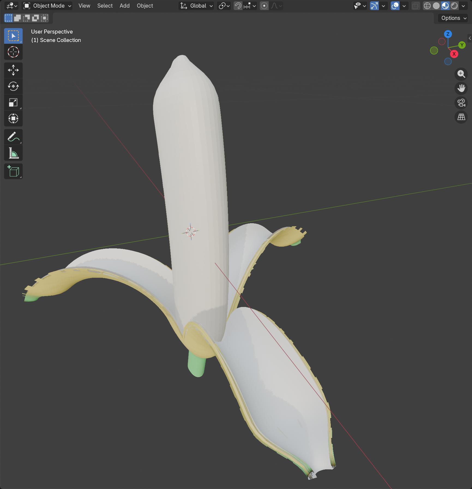 |
Turn on Uniform strips to drive all three strips with one Amount + Curl pair. Fast way to open the whole peel symmetrically.
Only shows when the peel is open. Three knobs control the bundle pack that shows at the torn edge:

When the shoulder is near-flat — shoulder_sharpness_pedicel and
_blossom both below 0.30 (e.g. cylindrical novelty bananas, lady-
finger types, or mid-Generate sweep tests) — the strip's natural curl
at small Amount is too small to clear the shoulder line and the
strip self-intersects the body. From t1.4.3 onward the strip lifts
radially outward like a sticker peel for the first ~12% of Amount,
then natural curl takes over smoothly.
No new slider — the lift engages automatically when both shoulder sharpness sliders fall below the threshold; default banana (sharpness ≈ 0.33) sees no behaviour change.
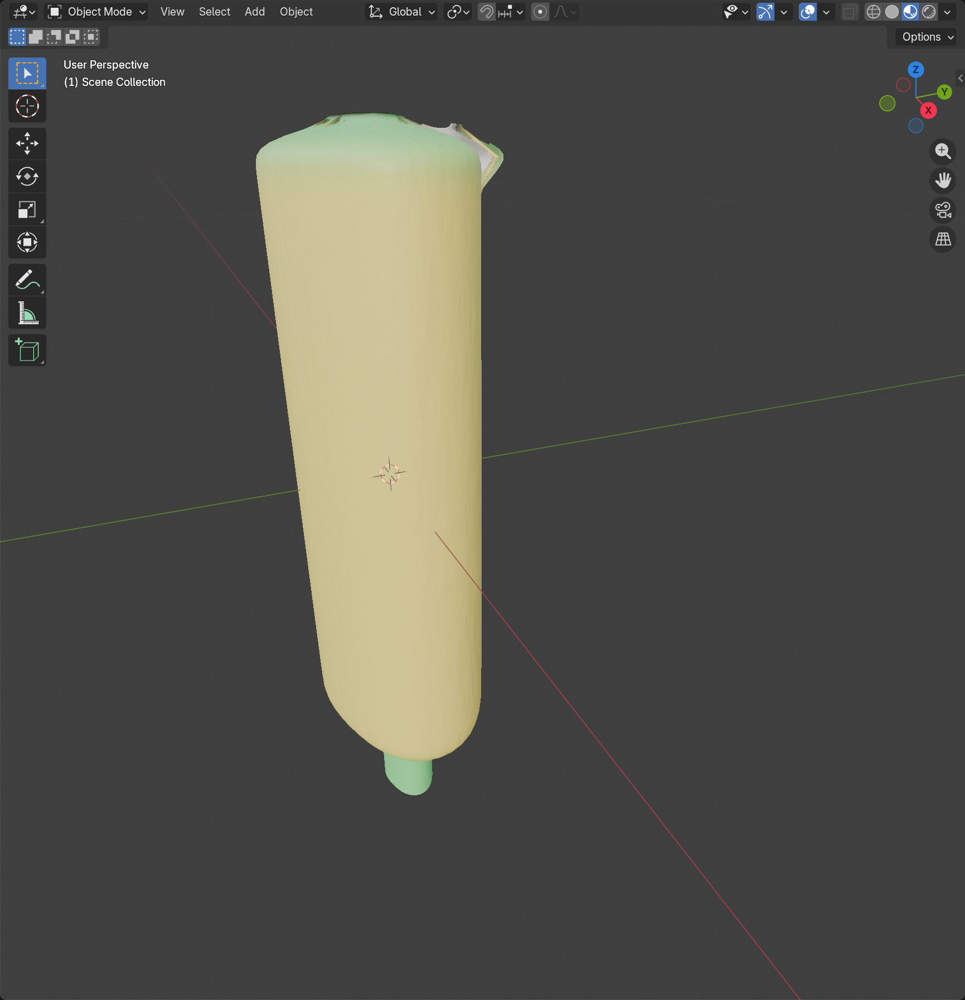
Animation block → toggle Peeling Animation.
Keyframes install immediately on the three strip-amount sliders and the timeline jumps to [1 .. F_end].

The built-in scenario is a cascade open + simultaneous close:
Default phase = 20, close = 20 → total 80 frames. Adjust the two sliders and the keyframes re-install automatically.
Press Spacebar in the 3D viewport or the Timeline's ▶ Play to watch.

Turn the toggle off to remove the keyframes — sliders become static again.
Only in the Realistic tab, since it transforms markers. The sliders apply to the markers and rebuild the silhouette — so the photo UV re-projects onto the new outline, no stretch artefact.

| Slider | Meaning |
|---|---|
| Length × | Scale along the stem→stigma axis (0.5–2.0 soft range) |
| Radius × | Scale perpendicular to the axis (same range) |
| Curvature Δ | Additional bend on top of the photo's natural curvature |
All three are relative to the original markers captured on the first Apply — sliders at 1 / 1 / 0 = no change.
🔄 Apply transforms markers and rebuilds. Baseline is captured automatically on the first Apply.
↶ Reset restores the original markers and resets the sliders.

The addon builds one active banana at a time (each Generate clears the previous banana.* objects). To keep multiple bananas in the scene side-by-side — for a variety pack render, say — use 📌 Pin Current.
banana.* object is renamed to banana_pinned_1.*, moved into a new Banana_Pinned_1 collection, and translated aside along +X.
Each banana the engine builds — pinned or active — is self-describing. Click any part of it (peel, pulp, bundles, …) in the viewport and the panel rewires to that banana's state:
Tweak the panel and press Apply Mesh Changes in the Selected Banana box — the addon rebuilds that banana in place, leaving its sibling bananas untouched. Multi-banana scenes therefore keep an editable state for every banana in the scene, not just the most recent build.
The Selected Banana box now hosts a single button. Colour, skin, and material slider drags update the active banana live (no rebuild), so the panel stays clean — Apply Mesh Changes is reserved for shape edits (length / radius / curvature / n_carpels) that need a fresh mesh.
Quality / Preset block at the top of the panel. Every preset is a JSON file that captures the full parameter state + (for realistic presets) the markers and photo path.
| Prefix | Meaning |
|---|---|
★ |
Built-in preset (locked, can't overwrite — fork via Save as…) |
🎲 |
Parametric preset (Stylized-friendly) |
📷 |
Has markers + photo block (Realistic-friendly) |
Built-in examples: ★ 🎲 cavendish, ★ 📷 realistic_red_banana.

| Button | Action |
|---|---|
| Load | Apply the selected preset to the scene |
| Save | Overwrite the currently selected user preset (disabled for built-ins) |
| Save as… | Write to a new name |
Found at the bottom of the Stylized tab. Writes the current state to the well-known user_default preset slot. Reload any time via the dropdown to return to your personal default banana.

The procedural shader uses vertex colours + procedural bump as Base Color, so the look depends heavily on lighting. A poor light setup makes any banana read flat or washed out — get this right before exporting renders.
Switch the viewport to Material Preview (top-right shading icons,
or Z → Material Preview) to see colours interactively. This uses
Blender's matcap-style preview lighting and is always vivid —
it's a different lighting setup from F12 render. Don't be surprised
if the F12 render looks different.
Properties → World → Surface → Background → use Image Texture and
load an .exr. Blender ships built-in HDRIs at:
{blender install}/{version}/datafiles/studiolights/world/
sunrise.exr forest.exr interior.exr night.exr
Strength controls how dominant the HDRI is in lighting: - 0.2 ~ 0.5: vivid product-shot look, banana yellow stays saturated. Recommended for hero shots. - 0.8 ~ 1.5: outdoor daylight feel, banana reads pale-cream. Good for "in the wild" scenes. - >2.0: blown out, banana looks white. Avoid.
| Outdoor (sunrise.exr, strength 0.25) | Indoor (interior.exr, strength 0.25) |
|---|---|
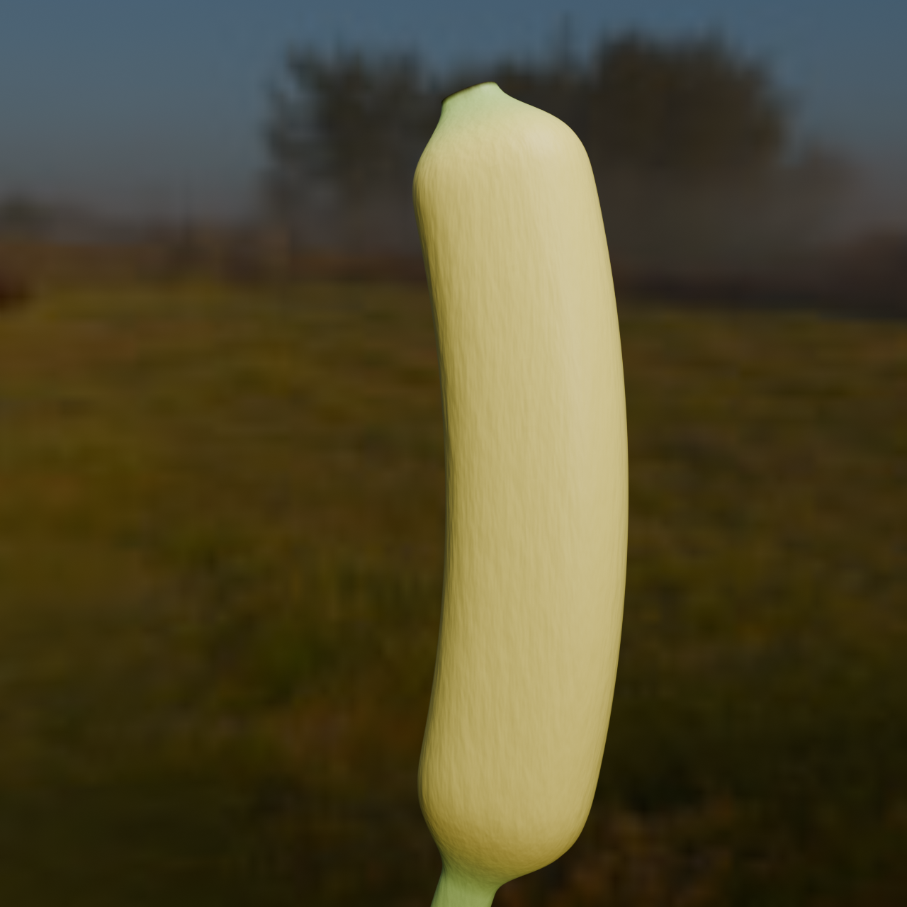 |
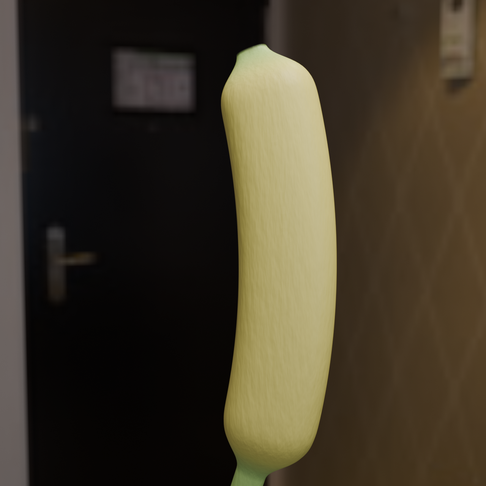 |
Outdoor: bright sky lighting → pale cream banana, washed-out saturation. Indoor: warm interior lighting → vivid yellow with visible green tip.
Both engines use the same shader. The differences:
| Eevee | Cycles | |
|---|---|---|
| Speed (1280×1280, 1 frame) | ~1 s | ~30 s (32 samples) |
| SSS quality | Approximate (real-time) | Path-traced (true) |
| Bundle / fiber translucency | Approximate | Accurate |
| Final render fidelity | "Looks great" | "Looks photorealistic" |
For Adrian / Superhive submission shots — Cycles. For animation playback / iteration — Eevee.
| Eevee (indoor) | Cycles (indoor) |
|---|---|
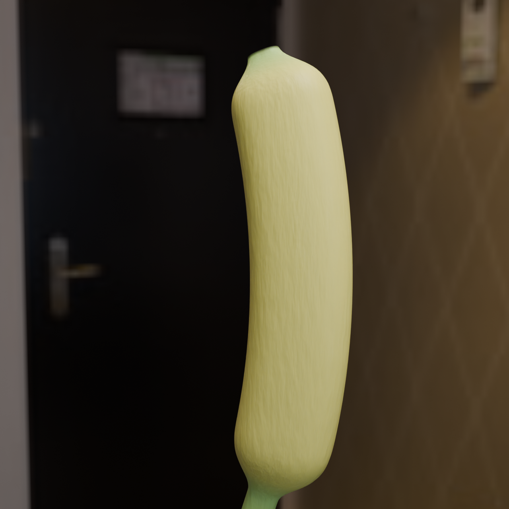 |
In good lighting the difference is subtle. In dramatic lighting (strong rim light, deep shadows, SSS through thin pulp) Cycles wins.
For a single-banana hero shot: * Camera lens: 50–60 mm (50 = natural, 60 = slight compression) * Camera height ≈ banana mid-Z (so the banana fills the frame vertically, not diving down or pointing up) * Distance: ~3 × banana length (so the banana occupies ~70% of frame height, with 15% margin top + bottom) * Slight azimuthal angle (30–45°) reads more sculptural than a flat side view
# Camera setup snippet (paste into Blender's Python console):
import math
cam = bpy.data.objects["Camera"]
cam.location = (0.20, -0.28, 0.04)
cam.rotation_euler = (math.radians(85), 0, math.radians(36))
cam.data.lens = 60
Properties → Output → resolution 1280×1280 for thumbnails,
2048×2048 for hero shotsProperties → Color Management → Look = High Contrast for
product-shot punch, Standard for accurate coloursThe peel / pulp pokes out of the silhouette. On highly-curved bananas this can happen at the narrow stem neck. Workaround: in the Realistic tab, drag the Neck markers slightly into the body (toward the thick midpoint). That shrinks the pulp's axial range so it stays clear of the narrow region.
Cylinder banana with low shoulder sharpness has a flickering peel strip. From t1.4.3 the peel strip lifts radially (sticker mode) at small Amount when both shoulder sharpness sliders are below 0.30. This is correct behaviour — see §6.4. If you want the old slide-into- shoulder behaviour, raise sharpness to ≥0.30.
Random Generation produces extreme bananas sometimes. Lower the
Variation Strength slider in the Random Generation operator's redo
panel (F9). 0.0 = defaults only; 0.7 (default) = wide range.
Random Color makes everything look the same. Fixed in t1.4.3 —
each palette now visibly tints the inner layers. If you still see
identical inners, you're on an old version (check
Edit > Preferences > Get Extensions > Koo Fruit Engine shows
1.4.3-test).
The banana renders pale/white instead of yellow. The procedural shader uses vertex colours as Base Color; bright HDRI strength (>1.5) washes saturated yellow toward cream. Drop World HDRI strength to 0.25–0.5 (see §11.2).
Photo looks tiled or smeared on the back of the peel. The planar- XZ UV is mirror-symmetric about the Y axis by design — the back gets the mirrored photo. From the camera angle that shot the original photo, this is invisible. If you render from the opposite side, expect mirrored pigment.
Vertex colours don't show in viewport. Switch viewport shading
from Solid to Material Preview (top-right shading icons or Z).
Solid mode shows uniform gray.
Markers auto-place back to the default ellipse when I load a
preset. Fixed in v1.3. If you still see it, make sure the preset was
saved in v1.3+ (it'll have markers_version in its JSON).
Photo → Stylized button doesn't show. It only appears when a
Realistic build with markers + photo is loaded. If your photo has no
markers yet, click Build silhouette markers in the Realistic tab
first. The button uses bpy.ops.fruit.realistic_to_stylized.poll()
to gate visibility.
Confirm button is red with * after I touch a marker. That's
the dirty-state signal — markers have moved without a fresh build.
Click Confirm or Generate Realistic Banana to clear it.
Save as Default doesn't persist after Blender restart. It saves
to the user_default preset slot. Verify by reopening the preset
dropdown after restart — user_default should be present and Load
should restore your values.
Generate is slow. Drop Quality from HIGH to LOW — still
production-grade mesh density (48 × 60 rings, 60 bundles). LOW
~3 s, HIGH ~30+ s.
I have 100 bananas in the scene and Blender is sluggish. Each Pin creates a separate set of 11 mesh objects (~100k verts × 11 ≈ 1M verts at LOW). For diorama scenes >50 bananas, generate at LOW and consider decimating the inner pulp/bundles after Pin (they're mostly hidden anyway).
Cycles render takes minutes. 32 samples is preview, 128 is
final. Use OptiX denoise (Properties → Render → Sampling → Denoise
→ OptiX) to cut effective sample count by 4×.
FBX export loses the procedural shader. Procedural shaders don't
survive FBX export (Unity / Unreal / Maya can't replay Blender's
node graph). Bake materials before export: Properties → Render →
Bake → Diffuse → bake to texture, then export FBX with the baked
texture maps. The vertex colours survive — most engines can read
them as a COLOR_0 attribute.
glTF export looks correct but bigger than expected. Procedural bumps are baked into normal maps during glTF export, which adds texture file size. For tight asset packs, bake at 1024×1024 instead of the default 2048.
I want to change a parameter that's not in the N-panel. See §13 Advanced — JSON-editable parameters.
Addon didn't install / can't find Koo Fruit tab. Blender 4.2+ is required. For 4.2 LTS you may need to enable "Extensions" in Preferences first.
Where do I report a bug? Email the maintainer with:
1. Blender version (Help → About)
2. Extension version (Preferences → Get Extensions → Koo Fruit Engine)
3. Steps to reproduce
4. The .blend file (Save the offending state)
5. Console log if there's a Python traceback
The N-panel exposes ~22 curated hero parameters. The JSON preset schema defines ~60+ more. To edit them:
%APPDATA%/Blender Foundation/Blender/5.0/config/fruit_engine/presets/<name>.json, then Load from the dropdown.Full UI-vs-JSON mapping table:
docs/stylized_params_advanced.md
Each preset value corresponds to a registered parameter in
addon/koo_fruit_engine/data/parameters/banana.json
— same schema for every fruit archetype.
This appendix is generated from the live property definitions on scene.fruit_engine. 179 parameters across 8 groups; 56 are exposed in the N-panel (UI Label column shows the slider name as it appears in Blender). The remaining 123 are JSON-only — edit the preset file to access them (see §13).
meta group| UI Label | Path | Type | Default | Min / Range | Max | Description |
|---|---|---|---|---|---|---|
| Preset | meta.preset_selection |
enum | `` | Choose a cultivar — auto-applies to the 3D viewport | ||
| 🔬 Profile Generate | meta.profile_generate |
bool | False | — | — | Time each pipeline stage and dump a breakdown to comms/profile_generate_result.txt on every Gener… |
| Show advanced parameters | meta.stylized_show_advanced |
bool | False | — | — | Reveal the extra 10+ parametric knobs (shoulder sharpness, ovality, spot density, peel thickness,… |
| — | meta.auto_regen |
bool | False | — | — | When on, regenerate 0.3s after any geometry / material parameter change. Default OFF in koo — us… |
| — | meta.autosave_last_state |
bool | True | — | — | Write current parameter values to disk after every regenerate, so the next Blender session starts… |
| — | meta.fruit_type |
enum | `` | Which fruit archetype to generate | ||
| — | meta.generate_mode |
enum | REPLACE |
REPLACE, ADD |
What to do with this archetype's existing objects | |
| — | meta.quality |
enum | LOW |
LOW, HIGH |
Mesh density / render fidelity | |
| — | meta.render_style |
enum | REALISTIC |
REALISTIC, STYLIZED |
REALISTIC = full SSS + specular + normal detail. STYLIZED = flatter shading + saturated colors + … | |
| — | meta.rng_base_seed |
int | 42 | 0 | 2147483647 | Global RNG anchor. Change to produce variant models |
| — | meta.ui_mode |
enum | TOY |
TOY, ADVANCED |
Toy = 6 hero sliders, fun-first layout. Advanced = full 50+ parameter control. | |
| — | meta.workflow_mode |
enum | REALISTIC |
REALISTIC, STYLIZED |
Realistic = photo + markers pipeline. Stylized = parametric shape/color sliders, no photo needed. |
shape group| UI Label | Path | Type | Default | Min / Range | Max | Description |
|---|---|---|---|---|---|---|
| Belly Ecc | shape.belly_eccentricity |
float | 0.15 | 0 | 0.3 | Cross-section offset toward the convex (belly) side. 0 = symmetric, 0.15 = Cavendish observed, 0.… |
| Bulge | shape.bulge |
float | 0.085 | 0 | 0.5 | Carpel bulge factor (1 + bulge·cos(3θ)). Higher = more pentagonal cross-section |
| Ovality | shape.cross_section_ovality |
float | 0 | 0 | 0.3 | Secondary ridge amplitude (0 = rounded / no secondary ridges, 0.3 = strong). Sign is visually a n… |
| Ovality Folds | shape.cross_section_ovality_folds |
int | 5 | 2 | 12 | Secondary ridge frequency around the cross-section. Default 5 combined with 3-fold carpel bulge g… |
| Bend Peak | shape.curl_peak_frac |
float | 0.5 | 0.2 | 0.8 | Where along the length the curvature peaks. 0.5 = symmetric arc; <0.5 = peak near pedicel |
| Curvature | shape.curvature |
float | 1 | 0 | 2 | Bend amount (0 = straight) |
| Curvature Δ | shape.deform_curvature_delta |
float | 0 | -1 | 1 | ADDITIONAL bend applied on top of the original banana's natural curvature. 0 = no change (natural… |
| Length × | shape.deform_length_scale |
float | 1 | 0.5 | 2 | Scale along the stem→stigma axis before rebuild |
| Radius × | shape.deform_radius_scale |
float | 1 | 0.5 | 2 | Scale perpendicular to the stem→stigma axis before rebuild |
| Depth Ratio | shape.depth_ratio |
float | 0.85 | 0.5 | 1 | Cross-section aspect: depth / width |
| Length | shape.length |
float | 0.22 | 0.05 | 1 | Banana length in meters |
| Radius | shape.radius |
float | 0.03 | 0.005 | 0.2 | Cross-section half-radius in meters |
| Sharpness | shape.shoulder_sharpness_blossom |
float | 0.33 | 0 | 3 | Curvature at the blossom-end shoulder. Same semantics |
| Sharpness | shape.shoulder_sharpness_pedicel |
float | 0.33 | 0 | 3 | Curvature at the stem-end shoulder. <1 = plump (cylinder), >1 = skinny (pencil-like). 0 ≈ fully f… |
| Stem Extension | shape.stem_extension_frac |
float | 0.15 | 0 | 0.5 | Fraction of body length the cluster projects past u=0 as an emergent pedicel stub (peel + bundles… |
| Position | shape.taper_shoulder_frac |
float | 0.33 | 0.05 | 0.45 | Length fraction of the wide pedicel-side shoulder |
| Position | shape.taper_tip_frac |
float | 0.18 | 0.05 | 0.45 | Length fraction of the tapered blossom-side tip |
| — | shape.bend_plane_angle |
float | 0 | -3.142 | 3.142 | Rotate bend plane around Z (0 = concave faces +X) |
| — | shape.pedicel_tip_frac |
float | 0.35 | 0.15 | 0.6 | Body radius fraction at the pedicel end (neck bottleneck). 0.35 = Cavendish photo measurement |
| — | shape.taper_asymmetry |
float | 0.3 | -1 | 1 | -1 = pedicel heavier, +1 = blossom heavier, 0 = symmetric |
| — | shape.twist |
float | 0 | -3.142 | 3.142 | Axial twist along length |
color group| UI Label | Path | Type | Default | Min / Range | Max | Description |
|---|---|---|---|---|---|---|
| Membrane | color.membrane |
float | 0 | 0 | 1 | |
| Override raw colors | color.override_raw |
bool | False | — | — | Raw pickers win over ripeness-driven blend |
| Inner | color.peel_flesh_side |
float | 0 | 0 | 1 | |
| Tip | color.peel_green_tip |
float | 0 | 0 | 1 | |
| Outer | color.peel_outer |
float | 0 | 0 | 1 | |
| Pulp | color.pulp_pearl |
float | 0 | 0 | 1 | |
| Warm | color.pulp_warm |
float | 0 | 0 | 1 | |
| Tip Reach | color.tip_green_frac |
float | 0.1 | 0 | 0.5 | Fraction of length at each tip kept green-tinged |
| — | color.bundle_inner |
float | 0 | 0 | 1 | |
| — | color.bundle_outer |
float | 0 | 0 | 1 | |
| — | color.fiber_inner |
float | 0 | 0 | 1 | |
| — | color.fiber_outer |
float | 0 | 0 | 1 | |
| — | color.honey_band_intensity |
float | 1 | 0 | 2 | |
| — | color.honey_dark |
float | 0 | 0 | 1 | |
| — | color.honey_light |
float | 0 | 0 | 1 | |
| — | color.peel_brown_spot |
float | 0 | 0 | 1 | |
| — | color.pericarp_inner |
float | 0 | 0 | 1 | |
| — | color.pericarp_outer |
float | 0 | 0 | 1 | |
| — | color.ripeness |
float | 0.5 | 0 | 1 | 0 = green unripe, 0.5 = ripe yellow, 1 = brown-spotted |
| — | color.saturation_scale |
float | 1 | 0 | 2 | |
| — | color.seed_dark |
float | 0 | 0 | 1 | |
| — | color.seed_light |
float | 0 | 0 | 1 | |
| — | color.spot_density |
float | 0.3 | 0 | 1 | Brown age-spot scatter density |
| — | color.spot_size_mean |
float | 0.004 | 0.001 | 0.02 | |
| — | color.spot_size_variance |
float | 0.5 | 0 | 1 | |
| — | color.stem |
float | 0 | 0 | 1 | |
| — | color.teardrop_inner |
float | 0 | 0 | 1 | |
| — | color.teardrop_outer |
float | 0 | 0 | 1 | |
| — | color.tip_green_shift |
float | 0.15 | -0.2 | 0.4 | Hue shift toward green at tips |
| — | color.yellow_dot |
float | 0 | 0 | 1 |
peel group| UI Label | Path | Type | Default | Min / Range | Max | Description |
|---|---|---|---|---|---|---|
| Fiber cling | peel.inner_fiber_cling |
float | 0 | 0 | 1 | 0 = fibers curl with peel, 1 = fibers stay on flesh |
| Peel Open | peel.open |
bool | True | — | — | Enable peel strip shape keys |
| Amount | peel.strip1_amount |
float | 1 | 0 | 1 | |
| Curl | peel.strip1_curl |
float | 1 | 0 | 1 | |
| Suture Ridge | peel.suture_ridge_height_pct |
float | 0 | 0 | 30 | As % of peel thickness |
| Thickness | peel.thickness_pct |
float | 0 | 2 | 30 | As % of body radius |
| Uniform strips | peel.uniform |
bool | False | — | — | Link all three strip sliders (move together) |
| — | peel.feather_cap |
float | 0.02 | 0.001 | 0.1 | |
| — | peel.feather_frac |
float | 0.15 | 0 | 0.5 | |
| — | peel.max_curl_angle |
float | 2.618 | 1.57 | 3.15 | Maximum tip angle at curl=1, amount=1 |
| — | peel.pedicel_anchor_frac |
float | 0.25 | 0 | 0.5 | Fraction of body from the pedicel end that stays attached at full peel (amount=1). 0 = peel comes… |
| — | peel.strip2_amount |
float | 0.5 | 0 | 1 | |
| — | peel.strip2_curl |
float | 1 | 0 | 1 | |
| — | peel.strip3_amount |
float | 0 | 0 | 1 | |
| — | peel.strip3_curl |
float | 1 | 0 | 1 | Strip 3 shares banana bend plane — lower if curls collide with flesh |
| — | peel.suture_ridge_height |
float | 0.00015 | 0 | 0.001 | Absolute ridge peak height (m) |
| — | peel.suture_ridge_taper |
float | 0.3 | 0 | 1 | |
| — | peel.suture_ridge_width_deg |
float | 60 | 20 | 120 | Angular width of each suture ridge |
| — | peel.thickness |
float | 0.003 | 0.0005 | 0.01 | Absolute peel thickness in meters |
| — | peel.thickness_variation |
float | 0.2 | 0 | 1 | 0 = uniform. 1 = 30% thinner at blossom tip |
anatomy group| UI Label | Path | Type | Default | Min / Range | Max | Description |
|---|---|---|---|---|---|---|
| Bundle Count | anatomy.bundles.density |
int | 0 | 0 | 800 | Total number of scattered phloem bundles (outer 4 layers). 0 = auto from Quality (LOW 60 / MED 20… |
| Outer Clearance | anatomy.bundles.outer_gap_frac |
float | 0.3 | 0 | 0.5 | Fraction of the peel-layer radial span reserved near the outer shell where body bundles are NOT s… |
| Bundle Thickness | anatomy.bundles.radius_scale |
float | 1 | 0.5 | 2 | Scale all bundle tube radii |
| Band (°) | anatomy.bundles.suture_band_deg |
float | 5 | 0 | 20 | Gaussian 3σ half-width in degrees. Peak density sits AT the suture angle; ~99.7 % of the extra bu… |
| Pack | anatomy.bundles.suture_pack_frac |
float | 0.3 | 0 | 10 | Extra bundles packed at peel suture lines (θ = 60°/180°/300°) so a curled strip's exposed cross-s… |
| Carpels | anatomy.n_carpels |
int | 3 | 2 | 12 | Number of carpels = primary ridge count around the cross-section. 3 = banana (Musa), 5 = apple, 2… |
| Seed Density | anatomy.seeds.count_per_line |
int | 8 | 1 | 20 | Number of seed specks along each of the 6 teardrop axes |
| Interior | anatomy.show_interior |
bool | True | — | — | Include bundles / honey halo / teardrops / seeds |
| Membrane | anatomy.show_membrane |
bool | True | — | — | |
| Pulp | anatomy.show_pulp |
bool | True | — | — | |
| — | anatomy.bundles.color_falloff_power |
float | 1.2 | 0.5 | 3 | Power curve for radial color gradient (inner→outer) |
| — | anatomy.bundles.layer_weights |
str | '2,4,8,16' | — | — | Comma-separated density ratio per radial layer (outward) |
| — | anatomy.bundles.n_tube_seg |
int | 10 | 6 | 20 | Polygon sides per bundle tube cross-section |
| — | anatomy.bundles.r_inner |
float | 0.33 | 0.1 | 0.6 | Normalized r∈[0,1] boundary at flesh side |
| — | anatomy.bundles.r_outer |
float | 0.85 | 0.5 | 0.95 | Normalized r boundary at epidermis |
| — | anatomy.bundles.safety_margin |
float | 0.0001 | 0 | 0.001 | Safety gap between bundle tube edge and peel inner surface |
| — | anatomy.bundles.taper_frac |
float | 0.1 | 0 | 0.3 | Length fraction near each tip where bundle density feathers |
| — | anatomy.bundles.taper_min_ratio |
float | 0.45 | 0 | 1 | Minimum tube-radius ratio in the taper zone |
| — | anatomy.bundles.tube_r_inner |
float | 0.00045 | 0.0001 | 0.002 | Absolute tube radius at the innermost layer |
| — | anatomy.bundles.tube_r_outer |
float | 0.00015 | 5e-05 | 0.001 | Absolute tube radius at the outermost layer (near epidermis) |
| — | anatomy.fibers.density |
int | 0 | 0 | 60 | Number of innermost fibers (the white strings). 0 = auto, scaling with Quality. ⚠ Requires Regene… |
| — | anatomy.fibers.n_tube_seg |
int | 10 | 6 | 20 | |
| — | anatomy.fibers.r_inner |
float | 0.2 | 0.05 | 0.4 | |
| — | anatomy.fibers.r_outer |
float | 0.33 | 0.2 | 0.5 | |
| — | anatomy.fibers.radius_scale |
float | 1 | 0.5 | 3 | Scale inner fiber tube radii |
| — | anatomy.fibers.taper_frac |
float | 0.1 | 0 | 0.3 | |
| — | anatomy.fibers.tube_r_inner |
float | 0.00045 | 0.0001 | 0.002 | |
| — | anatomy.fibers.tube_r_outer |
float | 0.00038 | 0.0001 | 0.002 | |
| — | anatomy.honey.band_half_width |
float | 0.000867 | 0.0001 | 0.002 | |
| — | anatomy.honey.band_width_scale |
float | 1 | 0.5 | 2 | Scale the width of the 6 honey bezier bands |
| — | anatomy.honey.dot_offset |
float | 0.00024 | 0 | 0.0005 | |
| — | anatomy.honey.halo_max_r |
float | 0.011 | 0.005 | 0.02 | |
| — | anatomy.honey.halo_min_r |
float | 0.0066 | 0.003 | 0.015 | |
| — | anatomy.honey.head_hw |
float | 0.00042 | 0.0001 | 0.001 | |
| — | anatomy.honey.r_head |
float | 0.0062 | 0.003 | 0.015 | |
| — | anatomy.honey.r_open |
float | 0.0018 | 0.0005 | 0.005 | |
| — | anatomy.honey.tail_hw |
float | 0.0001 | 1e-05 | 0.0005 | |
| — | anatomy.honey.taper_frac |
float | 0.08 | 0 | 0.3 | |
| — | anatomy.membrane.offset |
float | 0.0003 | 0 | 0.001 | |
| — | anatomy.membrane.thickness |
float | 0.0002 | 5e-05 | 0.001 | |
| — | anatomy.pulp.membrane_gap |
float | 5e-05 | 0 | 0.001 | |
| — | anatomy.pulp.warmth |
float | 0.5 | 0 | 1 | 0 = pearl white, 1 = warm cream |
| — | anatomy.seeds.axial_end_frac |
float | 0.85 | 0 | 1 | |
| — | anatomy.seeds.axial_start_frac |
float | 0.15 | 0 | 1 | |
| — | anatomy.seeds.darkness |
float | 0.8 | 0 | 1 | 0 = light brown, 1 = near black |
| — | anatomy.seeds.radius_lat |
float | 0.0009 | 0.0001 | 0.005 | |
| — | anatomy.seeds.radius_lon |
float | 0.0015 | 0.0001 | 0.005 | |
| — | anatomy.seeds.size_scale |
float | 1 | 0.3 | 3 | |
| — | anatomy.show_pericarp |
bool | True | — | — | Annular fleshy layer between membrane and peel. Reveals a yellow→cream cross-section gradient and… |
| — | anatomy.show_stigma |
bool | False | — | — | |
| — | anatomy.stem.base_radius_frac |
float | 0.32 | 0.1 | 0.8 | Base radius as fraction of local banana width |
| — | anatomy.stem.bow |
float | 0 | -1 | 1 | Axial bow along stem length (0 = straight) |
| — | anatomy.stem.length |
float | 0.004 | 0.0005 | 0.05 | Absolute stigma/stem protrusion (meters) |
| — | anatomy.stem.n_rings |
int | 6 | 3 | 20 | |
| — | anatomy.stem.taper_ratio |
float | 0.72 | 0.3 | 1 | Tip radius / base radius (truncated cone) |
| — | anatomy.teardrops.dot_offset |
float | 0.00017 | 0 | 0.0005 | |
| — | anatomy.teardrops.head_hw |
float | 0.00021 | 0.0001 | 0.001 | |
| — | anatomy.teardrops.inner_width_scale |
float | 0.55 | 0.1 | 1 | |
| — | anatomy.teardrops.r_head |
float | 0.0031 | 0.001 | 0.008 | |
| — | anatomy.teardrops.r_open |
float | 0.0009 | 0.0003 | 0.003 | |
| — | anatomy.teardrops.scale |
float | 1 | 0.5 | 1.5 | Scale the 6 ovule teardrop tubes (outer + inner + yellow dots) |
| — | anatomy.teardrops.tail_hw |
float | 5e-05 | 1e-05 | 0.0005 | |
| — | anatomy.teardrops.taper_frac |
float | 0.08 | 0 | 0.3 | |
| — | anatomy.teardrops.yellow_dot_radius |
float | 4.5e-05 | 1e-05 | 0.0002 |
surface group| UI Label | Path | Type | Default | Min / Range | Max | Description |
|---|---|---|---|---|---|---|
| Bump Amount | surface.bump_amount |
float | 0.3 | 0 | 1 | Procedural bump height multiplier |
| Bump Scale | surface.bump_scale |
float | 20 | 1 | 100 | Noise cell count along length |
| Micro Noise | surface.micro_noise_amount |
float | 0.1 | 0 | 1 | |
| Peel Roughness | surface.peel_roughness |
float | 0.48 | 0.1 | 0.9 | |
| — | surface.bundle_roughness |
float | 0.55 | 0.1 | 0.9 | |
| — | surface.fiber_roughness |
float | 0.75 | 0.1 | 0.9 | |
| — | surface.honey_roughness |
float | 0.35 | 0.1 | 0.9 | |
| — | surface.membrane_roughness |
float | 0.45 | 0.1 | 0.9 | |
| — | surface.pericarp_roughness |
float | 0.55 | 0 | 1 | |
| — | surface.pulp_roughness |
float | 0.55 | 0.1 | 0.9 | |
| — | surface.seed_roughness |
float | 0.85 | 0.1 | 0.9 | |
| — | surface.stem_roughness |
float | 0.7 | 0.1 | 0.9 | |
| — | surface.teardrop_inner_roughness |
float | 0.55 | 0.1 | 0.9 | |
| — | surface.teardrop_outer_roughness |
float | 0.35 | 0.1 | 0.9 | |
| — | surface.yellow_dot_roughness |
float | 0.35 | 0.1 | 0.9 |
material group| UI Label | Path | Type | Default | Min / Range | Max | Description |
|---|---|---|---|---|---|---|
| Edge snap (px) | material.edge_snap_radius |
int | 30 | 0 | 100 | Pixels searched along the contour normal for the strongest color-gradient (Sobel) edge. 0 disable… |
| Skin | material.photo_texture_mapping |
enum | STRIP |
STRIP, FULL, AURORA |
How the fruit surface is skinned. | |
| Marker count | material.silh_marker_count |
int | 48 | 12 | 100 | Number of silhouette markers initially placed in an ellipse around the photo. Higher = more detai… |
| Strategy | material.silh_trace_strategy |
enum | GRADIENT_ONLY |
ARCHETYPE, ARCHETYPE_SNAP, HYBRID, SATURATION, GRADIENT_ONLY |
How Auto-place detects the fruit silhouette in the photo. | |
| — | material.pericarp.ior |
float | 1.4 | 1 | 2.5 | Index of refraction. 1.40 ≈ plant cell wall. |
| — | material.pericarp.sss_color |
float | 0 | 0 | 1 | |
| — | material.pericarp.sss_radius |
float | 0.003 | 0 | 0.01 | Subsurface scattering mean free path (m). 0.003 ≈ 3 mm parenchyma scatter. |
| — | material.pericarp.translucency |
float | 0.3 | 0 | 1 | Subsurface scattering weight. 0 = no SSS, 1 = pure SSS. |
| — | material.pericarp.transmission |
float | 0.4 | 0 | 1 | Pericarp translucency via Principled BSDF Transmission Weight. 0 = opaque (bundles hidden), 0.3-0… |
| — | material.photo_texture_mode |
bool | False | — | — | Wrap a photo around the banana's peel instead of the procedural color. Upload your selfie, your p… |
| — | material.photo_texture_path |
str | (empty) | — | — | Image path. Picking a file automatically switches Photo Texture Mode on; clearing the field turns… |
animation group| UI Label | Path | Type | Default | Min / Range | Max | Description |
|---|---|---|---|---|---|---|
| Close (frames) | animation.close_duration |
int | 20 | 5 | 120 | Frames the three strips take to close back to 0 together after Strip 3 reaches 50 %. All three hi… |
| Peeling Animation | animation.peeling_on |
bool | False | — | — | Insert keyframes on the peel-strip sliders. Enabling auto-turns on Peel Open |
| Phase (frames) | animation.phase_duration |
int | 20 | 5 | 120 | Frames required for one strip to reach 50 % open. Each subsequent strip starts peeling when the p… |
| — | animation.strip1_start |
int | 0 | 0 | 60 | |
| — | animation.strip2_start |
int | 20 | 0 | 60 | |
| — | animation.strip3_start |
int | 40 | 0 | 60 |
GPL-3.0-or-later — © 2026 kaiser390 (kaiser390@naver.com)
Built on Blender's extensions system (4.2+).
Bundled ML model: u2netp (~4.5 MB).
Used by the ML Smart auto-trace strategy.
Feedback, bug reports and preset contributions welcome at the project's repository.